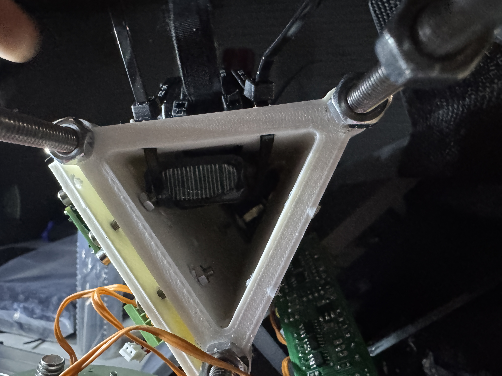

IREC UKF
Project Description
Our team is building a solid motor rocket that reaches 30,000 ft apogee for the 2026 IREC competition with a custom flight computer and airbrakes.
III. Launch 3
The purpose of this launch was to gather airbrake data for the Kalman filter sims. For the AV bay design, we moved from a sled to a triangle, thinking we could fit more components. However, we ran into many integration issues: it was difficult to access the inner part of the triangle for testing and the harnessing was extremely difficult. Also, avionics and airbrakes did not coordinate integration very well so we ended up guiding long wires through the airbrakes to the other side in order to control the servos.

The launch failed and the rocket was completely destroyed due to instability from an unsupported aluminum box for the payload in the middle of the rocket body, connecting the bottom half to the top half.
We aim to create a design with disks perpendicular to the rocket body which can slide out horizontally for easy access to components for the next launch.
Unscented Kalman Filter
I'm currently working on a UKF in Python to fuse all the sensor data (IMU, barometer, GPS, high-G accelerometer) and estimate the rocket's state so we know when to deploy the airbrakes.
Since the sensor rates are different, I'm using the slower sensor datapoint from the previous reading with all of the new faster sensor readings while waiting for the new slower sensor datapoint.
Check back for more progress!